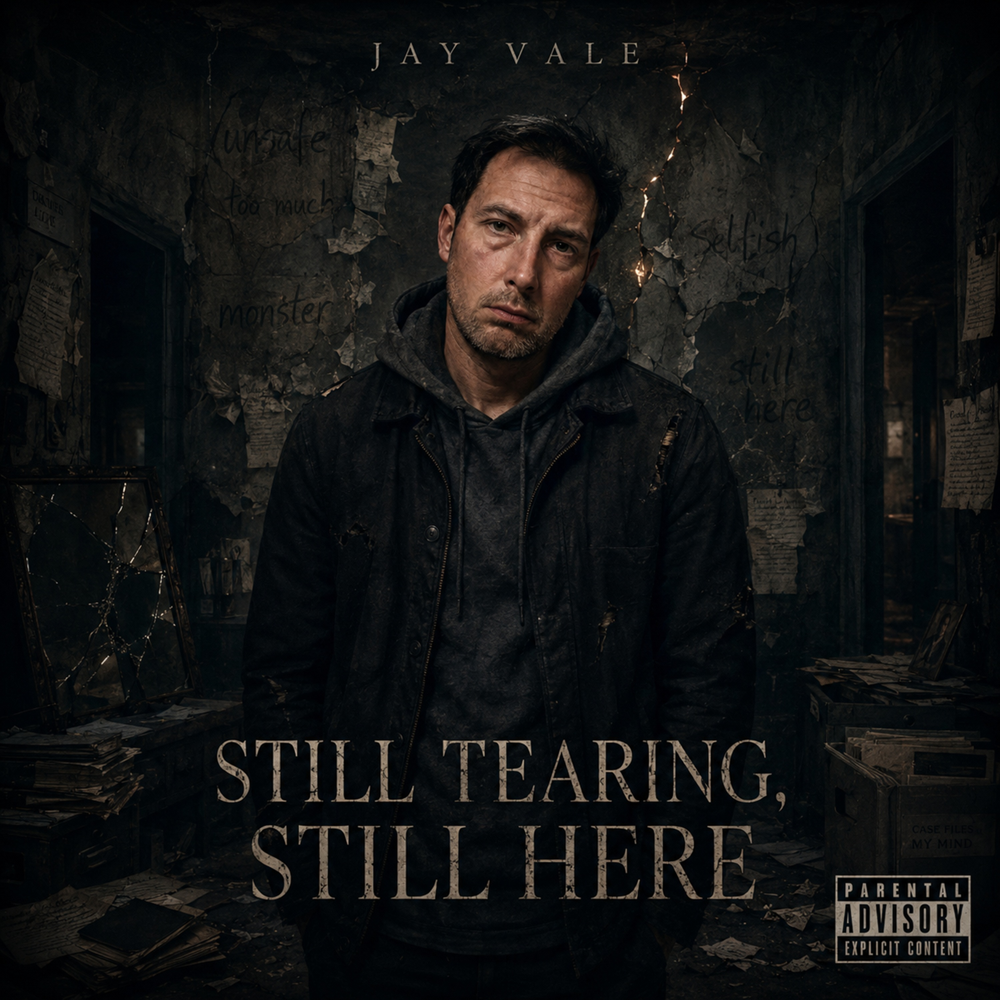

01
Intro
Jay Vale · 2:24
Listen on SpotifyReleased album
A dark cinematic album about the storm of giving up, setting dates for the exit, and fighting the part of yourself that already tried to leave.
This album is not written after the storm. It is written from the middle of the moment where giving up became organized, where dates were set, letters were written, and the mind started preparing for an ending while another part of me was still screaming, not yet.

The album
Still Tearing, Still Here is the new Jay Vale album under Heartship Records. It is a dark cinematic project about the moment giving up stopped being just a thought and became a plan, a calendar, a deadline and a conflict inside myself.
The album moves through the preparation stage of the mind: the letters, the silence, the strange calm, the clean little lie of making everything look controlled while the inside is already saying goodbye.
But this is not a celebration of leaving. It is the sound of the argument before the door. One part of me had accepted the exit. Another part kept fighting, delaying, questioning, renegotiating and trying to find one reason to stay.
Still Tearing does not mean crying. It means ripping. Splitting. Being pulled apart by the part that wanted the exit and the part that still refused to disappear quietly.
Still Here is not a victory pose. It is the uncomfortable fact that even after the dates were set, even after the mind prepared for the ending, something in me was still breathing, still arguing and still asking for more time.
The sound
Official tracklist
18 tracks in the released Spotify order. Released 6 July 2026. Listen to Still Tearing, Still Here on Spotify.
01
Jay Vale · 2:24
Listen on Spotify02
Jay Vale · 5:44
Listen on Spotify03
Jay Vale · 6:19
Listen on Spotify04
Jay Vale · 3:51
Listen on Spotify05
Jay Vale · 5:18
Listen on Spotify06
Jay Vale · 5:09
Listen on Spotify07
Jay Vale · 5:02
Listen on Spotify08
Jay Vale · 5:59
Listen on Spotify09
Jay Vale · 5:37
Listen on Spotify10
Jay Vale · 5:24
Listen on Spotify11
Jay Vale · 5:01
Listen on Spotify12
Jay Vale · 4:51
Listen on Spotify13
Jay Vale · 5:28
Listen on Spotify14
Jay Vale, Yvonn · 5:42
Listen on Spotify15
Jay Vale · 5:44
Listen on Spotify16
Jay Vale · 4:09
Listen on Spotify17
Jay Vale · 4:33
Listen on Spotify18
Jay Vale · 3:52
Listen on SpotifyThe statement
This album is not about pretending the darkness disappeared. It is about telling the truth about what happens when the mind starts preparing to leave, while the person inside it is still conflicted enough to fight.
It is not clean survival. It is not a heroic comeback. It is the sound of someone standing at the edge of their own decision, exhausted, angry, ashamed, unsure, and still saying: not yet.
Follow the release
Follow Jay Vale / Heartship Records for updates, visuals, releases, backstories and the full world behind Still Tearing, Still Here.
jay.vale.heartship@gmail.com